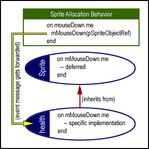

Object Oriented Sprite ModelingBy Paul Hemmer Copyright © 1999, Navistream Corporation |
|
|
OverviewAs a development environment, Director offers two very different approaches to authoring a multimedia piece. Non-programmers can use the score as a graphical layout mechanism by which screens can be dropped into place rather simply. On the other side of the spectrum are people who approach development from a programming standpoint. The goal of this article is to offer insight and actual techniques that the Object Oriented Director developer can use to allow these two approaches to work together in a flexible and robust manner. I will present to you the theory and Lingo code needed for you to design objects that manifest themselves dynamically in the score at runtime, and are equally as responsive to Director events (mouseDown, enterFrame etc.) as sprites which are physically placed on the score in authoring mode. The level of control you get as a Lingo programmer using these techniques should hopefully open your eyes to a whole new level of Director development. This article will cover the following topics :
I will present some background information which will help you better understand how such an approach can facilitate your development efforts and tie it all together with a demo Director movie which illustrates an actual implementation of these techniques. From there it is up to you and your imagination to fully exploit the potential of what is presented here. BackgroundThe "one-frame movie" is a Director movie in which Lingo is the driving force behind what the user sees and interacts with on the screen. It's a movie in which all activity takes place in a single frame on the Director score. While standard procedural scripting can be used to make most any desired action happen, as Object Oriented developers, we strive to design an approach to our development such that our efforts can be reused and minimized at the same time. As a developer of a "one frame movie", you are faced with the task of programmatically implementing everything that is to happen on screen and between the system and the user. As a "code minded" developer, I find that I like to have complete control. However, it is very important to remain flexible in your development process, whichever side you are approaching it from. It is important for the "code minded" developer to understand that the potential offered by the score as a layout mechanism is enormous. It is counterproductive to abandon the potential offered by the score simply out of the purist mindset. Artists can use the powerful graphical layout and animation capabilities for those elements of a multimedia piece which are static. Lingo developers may be faced with the task of programmatically "bringing to life" an artist's score based representation. In such a scenario, it is important that we design code that is robust, yet flexible enough to work with those static elements that naturally change throughout the development process. Lingo programmers often need to implement things like rollover tool-tips, pop-up menus, animated run-time characters and other such bullets, bombs, monsters and mazes so prevalent in the wide range of applications that are possible with Director. In data- driven environments, often a static interface will be "brought to life" when search results, user input etc., are dynamically represented graphically. What we want to avoid when developing such applications is the need to hard-code sprite channels, frame-numbers, cast members etc., in our efforts to work around any static, score-based interface elements which already exist. The importance of such flexibility is compounded in a team based development environment. Any OOP purist will understand that a GUI and other such dynamic graphic representations must exist as a separate "layer" in a software design from the code and logic which drives the piece. Reliance on procedural and often hard-coded solutions when working with an interface and dynamic content, especially for larger projects, is analogous to hitting yourself over the head with a sledge-hammer, repeatedly, for months on end only to be left with code that is difficult to maintain, and not very portable. Not to mention a pretty bad headache! So where does this leave us? Well, unless you've got a lifetime supply of headache medicine, you'll probably want to take a more structured approach to the Lingo side of things. Dynamically allocated sprite channelsConsider for a moment the standard way of placing media on the score. We know that empty sprite channels are unresponsive to Director events such as mouseUp and mouseDown. As soon as you drop a media element into a sprite channel, you have essentially placed an object on the stage which is able to trap the standard set of Director events if you script it to do so. Notice also that if you drag a cast member from the cast window to the stage, Director automatically places this cast member into the next available sprite channel; as well, you have the option of dragging a cast member into a specific sprite channel. Still at this point, the new sprite will not respond to events unless it is scripted to do so. This is accomplished by placing a behavior on the sprite. For example, if you wanted your new sprite to be able to change its cast member on mouseEnter (ie, for a button rollover), you could drag the "UI Rollover Change Member" behavior from the Director Behavior Library onto your new sprite to give it this functionality. Remember that what I am describing here is the allocation of a sprite and its behavior during authoring mode and is a straightforward process that we are all familiar with. In order to make this type of functionality dynamic such that it can happen at run-time we need to prepare the unused sprite channels in our score to mimic the action of manually dropping a cast member onto the stage in authoring mode. This requires two steps :
For a placeholder, I use a 1 pixel x 1 pixel cast member, created by opening the paint window and using the pencil tool to draw a single dot. I then place one of these in each unused sprite channel. At this point all you have is a score full of placeholders and any previously existing static interface elements. The Sprite Allocation behavior gives this set of placeholder sprites the following abilities :
By "Lingo Sprite Object" I'm generically referring to instances of the sprite class, which will be discussed shortly. For now assume there exists a Lingo object that can somehow "attach" itself to any given placeholder sprite. The Sprite Allocation BehaviorBased on the above discussion of how sprites are allocated and given behavior manually in authoring mode, it can be said that a behavior used to mimic such functionality at runtime should be able to perform the following tasks dynamically :
This set of functionality is exactly what the Sprite Allocation behavior is responsible for implementing. The actual behavior is included in the demo available at the end of this article. The Sprite Allocation behavior has the following properties : pOriginMember - stores the "placeholder" cast member
name As well, this behavior has the following methods : mReset me mFindNextEmptySprite me, dReturnList, dSpriteObjectRef mSetSpriteObjectRef me, dNewRef mouseUp me mouseDown me mouseEnter me mouseLeave me mouseUpOutside me rightMouseUp me rightMouseDown me enterFrame me exitFrame me prepareFrame me The method mReset is responsible for setting the member, rect and checked out status properties back to their defaults. Generally the default rect value for a placeholder is something offstage, such as rect(-1000, 0, -999, 1). Polling the frame for the next available dynamic sprite channel and "checking it out" is accomplished by the mFindNextEmptySprite method: on mFindNextEmptySprite me, dReturnList, dSpriteObjectRef
if count(dReturnList) then exit
if pEmpty then
add dReturnList, pSpriteNum
set pEmpty to FALSE
set pSpriteObjectRef = dSpriteObjectRef
end if
end
This method may not be self-explanatory now, but we'll discuss how it does what it does later in the article. You'll notice that each of the sprite and frame Director events is implemented within this behavior. This allows the sprite to trap for these events. This begs the question, how do we know what is supposed to be implemented within each of these methods if the sprites are generic? We can't tell if the sprite will be taken over by a pop-up field, or a game piece or a tool-tip at runtime. As such, it only makes sense that we can't have any specific implementation details within these methods. All they are responsible for is forwarding the event into the "Lingo Sprite Object" which has taken over the dynamic sprite channel. The Sprite Allocation behavior must have the property pSpriteObjectRef - so that it knows where to forward the event to. At this point we have discussed the purposes of the Sprite Allocation behavior and how it works. What I have yet to discuss is what exactly this generic "Lingo Sprite Object" is. All we know at this point is that it is an object that can take over a sprite channel. The Sprite ClassWhen you consider all the various types of media that can be placed on the score, you might think of anything from a Bitmap or a Field, to a FilmLoop or a Digital Video clip. While each of these media types are very different in their representations and their functionality, the commonality between them all is that they are all Sprites. Director implements a Sprite as a "built in" object. It exists on the stage in a given frame or range of frames. In order to gain complete control as a programmer, wouldn't it be nice to have a virtual representation of various sprite types that can be given properties, saved to files and exist across any frame or movie? Such objects give the programmer any level of control and no longer rely on a physical attachment to the score to exist, be modified or retain their state. Before considering specific types of sprites, we should abstract the commonalties into a single class, the SPRITE class. The sprite class is semi-abstract in that it has properties and implementations for those properties which are common to all types of physical sprites. Properties like rect, width, height, member, blend, ink which for the most part are common to all sprites types have properties and accessor/mutator methods implemented within this root-level sprite class. You'll notice in the demo code that all the "event" methods such as mMouseUp for example, are deferred methods. This means they have no implementation within this generic sprite class. Event methods contained within the sprite class are named as "m" plus the event name to re-iterate that these methods are not actual events trapped by Director. The Sprite Class also has a clone() method which allows you to create a new, unique instance of a given sprite object, and a stepFrame() method which allows you to add your custom sprite objects to the actorList - very useful for objects which have animated representations. Creating an instance of the Sprite ClassTo create an instance of the sprite class, we call the new() method : on new me, dMember, dRect, dSpriteToUse
-- dSPriteToUse is optional
set pMember to value(dMember)
set pRect to value(dRect)
if not(voidP(dSpriteToUse)) then
set pSpriteNum = dSpriteTouse
sendSprite(pSpriteNum, #mCheckOut, me)
end if
return me
end
Pay particular attention to what is happening within this constructor method. First of all, in order to create an instance of this virtual sprite, it should be given a member and a rect as arguments. Essentially this mimics dragging a cast member onto the stage. The thing to keep in mind is that instances of class sprite represent virtual sprites, i.e. they do not have to exist on the stage at any given time. However, to model the fact that you have the option to drag a cast member into a specific sprite channel, an optional argument dSpriteToUse can be used to specify which physical sprite this object should manifest itself in. If a value is passed for dSpriteToUse, a broadcast message is sent to that sprite to check it out (as opposed to polling the frame for the next available channel). Generally though you'll be creating a new instance without passing in a specific sprite channel to use. I find the ability to specify a sprite channel helpful for implementing things like tool- tips, that should, for example, use the top-most channel. At this point, we have created a virtual representation of a sprite, capable of knowing values for properties such as rect, member, ink etc. In order to physically manifest this virtual sprite on the stage, we must call mDisplay() : on mDisplay me
if voidP(pSpriteNum) then
set dNewSprite = createRealSprite(me, pMember, pRect)
set pSpriteNum = dNewSprite
end if
mUpdate me
end
Within this method, if the object's pSpriteNum property is not void, a call to createRealSprite() is made. The createRealSprite method is used as follows within the "Lingo Sprite Object" to manifest itself on the score: on createRealSprite me, dMember, dRect
set collectionList to []
sendAllSprites (#mFindNextEmptySprite, collectionList, me)
if count(collectionList) = 0 then
-- there are no more available dynamic sprite channels
set dNewSprite = 0
else
set dNewSprite to getAt(collectionList, 1)
end if
return dNewSprite
end
This uses the technique presented on Direct-L by John Dowdell. Since sendAllSprites cannot be used as a function (i.e. it does not return a value), we are passing a list reference to all the sprites. Within mFindNextEmptySprite, you'll notice that if dReturnList contains any values, the method is exited, as a value in the dReturnList means an empty sprite channel has already been found. Simply put, a broadcast message to all sprites in the current frame results in the first one with pEmpty = true checking itself out and setting its pSpriteObjectRef to the object that executed the broadcast event. That object is then aware of which sprite channel it has manifested itself in. The final call to mUpdate()iterates through the properties contained within the sprite class and sets the physical sprite properties accordingly. This is followed by a call to updateStage. Calling the sprite objects mReset() method clears the sprite objects internal properties and sends a message to the in-use sprite channel to reset itself, making it available for use by another object. Specialization of the Sprite ClassWith the sprite class alone, we can create a virtual sprite representation for most media types. What really makes this approach powerful is the ability to use Inheritance to create sub-classes which use the generic sprite class as their ancestor. This isn't simply so that we can differentiate media types, although doing so can be useful if it is appropriate. For almost any dynamic application, "things" created on screen will have some type of interaction with the user. Maybe you are creating a game in which you have 5 different enemy types, each one with a different look and feel, and a different response to a mouse click. Be it an "enemy", a "bomb", a "pop-up text box" or a "tool-tip" - these objects are all specialized versions of a sprite, and it is within these specialized event methods that specific implementation details exist. For example, to create a "health" item for a game, you might do something like the following: --parent script "health"
property ancestor, pPoints
on new me
set ancestor = new(script "classSprite", (member ¬
"healthIcon"), rect(10,10,100,100))
mDisplay(me)
end
on mMouseDown me
-- award somebody heath, etc.. anything!
end
It is within the sub-classes of sprite that specific event details are implemented. Because this virtual sprite object is referenced directly by the behavior in the physical placeholder sprite in which it was manifested, mouse-events and frame-events can be passed directly into this specific implementation, and nothing has been hardwired to an author-time score. This messaging pathway is illustrated in the following diagram :  ConclusionThe demo included with this article contains all the source code you need to implement sprite objects and the Sprite Allocation behavior. The demo illustrates sub- classing of the sprite class with the "classGenericCharacter" parent script, and then further sub- classing to create unique character implementations. These various types of characters are dynamically created and moved around the screen using the techniques presented here. Clicking on any given character causes a unique alert to appear. Although this demo is fairly simplistic, with it, you'll see an actual implementation of the sprite class working in conjunction with the Sprite Allocation behavior to dynamically allocate sprite channels. You will notice that the dynamic manifestations of these Lingo objects as run- time sprites are equally as responsive to mouse/frame events as any static sprite which you can place on the score and assign behaviors to in authoring mode. You'll be pleased to see how easy and straightforward the code really is. Note that all scripts in the demo are heavily commented, so take time to read them and understand how the internals of the code work. The sprite class is a fine example of a completely reusable Lingo component. As I stated earlier, the potential uses for these techniques are limited only by your imagination. I guarantee you the possibilities are limitless, as I continue to find new applications of these techniques in my Director development every day. A Director movie demonstraing this technique is available for download
in Mac
or PC
format.
Copyright (c) 1999, Paul Hemmer, Navistream Corporation
Paul Hemmer received a BS in Information Technology from Rochester
Institute of Technology. He is Senior Developer for Navistream Corporation
in Rochester NY. He primarily does Object Oriented Lingo development and
lately has doing quite a bit of ASP programming. Paul is very much an
advocate of OOP and always tries to push Director beyond its limits. He is
committed to increasing awareness of the power and importance of the
object oriented mindset and he does his best to make sure everybody on
DirectL knows how he feels. Paul's real love is music. He is a bass player
who happens to enjoy slinging Lingo by day. ;)
|